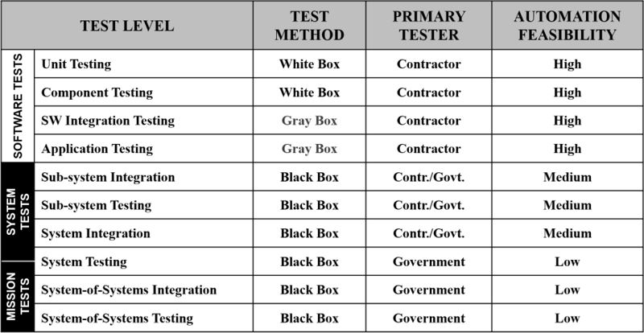

4 Scope of Test Automation
4.1 Tools Target Areas
Test automation tools support the full software development lifecycle. There is likely a tool for every aspect of software that is developed. Tools are categorized by types of testing they can perform. Test types can span multiple test levels (e.g. component, integration, system, etc.). The following represents broad categories of functionality that test tools are capable of.
4.1.1 Functional & Regression Testing
By far the most common use of automation is to test application functionality. This can include new functionality added in a release or retesting of existing functionality. In both cases the goal is to use automation to test the functionality of an application or system.
Applications use a variety of user interfaces. Most common today is the graphical user interface (GUI) that make up a large proportion of existing interfaces. All modern computers, tablets, and smartphones use a GUI (e.g. Windows, MacOS, Android, iOS, etc.). Historically, interfaces to systems were very crude and text based (e.g. Mainframe, Terminal, etc.). Some continue to be that way as the text based interface has very low overhead required by some applications or underlying hardware.
Interface (UI or GUI) testing test tools must be able to recognize the interface, graphical or otherwise, and the fields or objects on that interface. Where there is a standard implementation of the interface the test tool can easily recognize and interact with the fields or objects.
For fully graphical interfaces there are a number of significant elements which can be tested or verified for each object or control. For example, a simple text field where a user enters a name can have many attributes: value (what data is in the field); focus (is this the field where the cursor is at); enabled (can we interact with this field); etc.
Challenges:
- Not all interfaces are implemented consistently and some objects within an application may not be recognized by automation
- Use of third-party controls embedded into an interface can cause challenges in automation
- Some automation may need to be custom-coded. This requires programming skill and knowledge that should be performed by individuals with this level of experience.
- Migrating from one tool to another can pose challenges
- Adapting to changing technology (browser, OS, etc.) requires tools that are compatible
Best Practices:
- Understand the full suite of technology that is being implemented for the SUT.
- Don't take a vendor or a reviewer as the last word on compatibility without the using the tool in its intended environment to ensure it is compatible.
- Look at tools that are compatible with the level of skill in the organization
4.1.2 API Testing
Application Programming Interface (API) testing is testing that does not involve a user interface (e.g., text or graphical interface). This is often referred to as client-less testing or non-GUI testing. It simply means that there is no direct user interface by which the tester interacts. However, data is still passed to the application, the application responds, and these interactions can be measured, verified, and reported on with automated test tools. Most applications that have a UI or GUI also are communicating at the API level.
With API testing, rather than interacting with an object or control, we interact with a function or service. In order to do so we need to understand the structure of data that the function or service is expected to respond with. If we send the wrong data structure will it identify it as an error or do something unexpectedly? If we send data and receive no return data, what does that tell us? There needs to be a full understanding of what the function or service is supposed to do so that verification can be effective. This includes an understanding of knowing what the function or service is not supposed to do as well.
Challenges:
- Working with functions and services can be a little like working in the dark because you don't have the familiar context of UI controls
- Tools that are compatible with the implemented services
- Tools that can test APIs across devices and operating systems
- APIs may degrade in performance with multiple simultaneous calls to them
Best Practices:
- Understand what you are testing and get the full specification before you start
- Make sure that you change only one variable at a time to understand the effect of changes
- Have some known baseline test interfaces to start with in order to realize the expected behavior
- Work closely with the API developer or vendor who implemented the function or service to fully understand the expected behavior and to report any unusual or missing return data values.
4.1.3 Performance Testing
Performance testing is not concerned directly with testing functionality, but rather testing that functionality under load. Hence it is categorized as non-functional testing. Performance testing is difficult to impossible to do without test tools. In years past, rooms full of people and computers attempted to do performance testing but the cost was high, the consistency was low, and the breadth of testing left much to be desired. Modern performance testing tools simulate those same people on those same computers. Now, however, all the people and all the computers can be contained within one powerful computer. For extremely large simulations with heavy loads, performance testing can be distributed across multiple computers.
Performance testing tools have 3 areas of functionality:
Main controller
The controller function starts tests, ramps them up or down, and stops tests. The controller function schedules the testing event and runs the operational
profiles (often referred to as a scenarios) to simulate the conditions of a system in use.
User Script
The user script is the recorded or programmed sequence of events, or operational profile, that mimic the way in which a user interacts with a system.
Running the same user script concurrently is how the test tool simulates multiple users performing the same function. User scripts often contain timing
information (or wait statements as they are often called) that help regulate the speed of execution to something representative of a human user. Otherwise,
scripts could run at speeds far faster than how real users interact with a system, which would not accurately represent the performance of the system.
Reporting and Analysis
Performance test tools need to have robust reporting and analysis capabilities in order to accurately convey what has transpired. Reporting will include
transactional timing information (e.g., how long it took for a search to return) and aggregate data (e.g., all searches on average took no more than 3 seconds
to complete). Reporting can also include system resource utilization (e.g., caching, CPU, queues, etc.) and analysis can help correlate how system resources
are impacted by heavy transactional use. Cross analysis reporting aides in comparing subsequent test runs in order to evaluate effects on changes.
Challenges:
- Finding an environment that mimics production is difficult and expensive
- Test tools can be very expensive
- Performance testing can affect other users sharing that environment
- Improperly created setup tests may yield no errors when actual errors exist
- Erroneous results can result from lack of proper correlation or using the wrong database
Best Practices:
- Work with stakeholders to accurately define the various operational profiles
- Do not make multiple changes between tests as it makes it difficult to know each impact
- Test each operational profile individually and under load first before adding other profiles
- Keep scripts and data updated to reflect current changes in SUT
- Look at the test logs for errors that may not be present in the reports
4.1.4 Security Testing
Security testing tools help analyze and test applications for possible security vulnerabilities. There are 3 areas of interest for security testing: static, dynamic, and interactive [ref: Gartner Magic Quadrant for Application Security Testing]. Static analysis refers to looking at the application code from the inside, not when executed. Dynamic analysis is performing testing against a running application. There is overlap with the security qualities identified in static and dynamic security testing and interactive tests span both. Therefore it is advisable to begin security testing early in the software development lifecycle, as code is developed so that it can be assessed.
Static Application Security Testing
Static application security testing (SAST) of an application refers to analyzing the underlying application code for vulnerabilities. This may include source code,
byte code, or binaries. Due to the visibility of the code these tests are often referred to as "white box" tests. Scanning of code can be accomplished before any code
is compiled. Examining code can assist in uncovering vulnerabilities including SQL Injection, Buffer Overflows, Cross-Site Scripting, and Cross-Site Request Forgery.
Dynamic Application Security Testing
Dynamic Application Security Testing (DAST) provides applications that are running to be analyzed for possible security flaws. These may include traditional
client server applications of web-based applications. DAST has no visibility to the underlying application and therefore is referred to as "black box" testing.
Interactive Application Security Testing
Interactive Application Security Testing (IAST) allows visibility of possible vulnerabilities simultaneously within the application, often through the use of an
agent within the runtime environment, and externally via application interfaces. This can include penetration testing which includes the scanning of ports for
vulnerabilities.
A set of complementary and overlapping vulnerabilities can be identified with SAST, DAST, and IAST tools at different phase of the software development lifecycle. However, automated tools cannot find all vulnerabilities so be careful to not get a false sense of security. A comprehensive guide for cyber security testing can be found at [ref: DoD Cybersecurity Test and Evaluation Guidebook, version 2.0]
Blue team - penetration test. Red team - hacker to break into application. Red team in a box. Additional references for web application security available at: www.owasp.org.
Challenges:
- Getting developers to use SAST tools early on
- Tools may have difficulty parsing through code
- Tools will not find all vulnerabilities
- Understand the tool capabilities and how to properly set up for testing
Best Practices:
- Use tools regularly during development before code base becomes to large
- Security folks being proactive and helping program early
- Run tools on test and production environments
- Use a combination of best-in-class tools
- Identify and perform tests manually which tools may miss
- Decide what tests need to be run through automation. Automate when necessary as setup may take a lot of effort
4.1.5 Test Management
Test Management tools provide for collaboration and reporting of test events. These tools can be a one-stop repository of manual and automated tests, documentation, data files, and more. Test Management tools should provide a level of configuration management for the many test artifacts in use. Additionally, these tools should allow for the classification of a test event by version so that all components used for a test can be traced back to each individual component version and state. This is extremely important as it's not uncommon to have to revert to an earlier release of testing should the current release find problems.
Test Management tools often include a defect management module that allows manual and automated tests to create entries for defects. The defects can be assigned to owners and alerts can be configured to inform owners of the stages the defect is going through (e.g. identification, remediation, re-test, etc.)
Challenges:
- Identifying a solution that meets all your needs (e.g. requirements traceability, test case storage, defect cataloging, version control, etc.)
- Getting buy-in from team to keep data current
Best Practices:
- Plan out what features, functions, and customization will be necessary for your organization
- Make fields of important information required entry or selectable to aid in queries searching and reporting
- Produce targeted reporting and dashboards to meet stakeholder needs
- Identify areas of commonality to produce consolidated reporting (RTM). Combining so everybody sees the same source of truth.
- Allow ability to run canned reports as needed.
4.2 Test Levels
Government systems cover a broad range of testing levels. Some of these are contractor-focused test deliverables. Others are joint contractor-government,
and yet others are government-only tests. Automation can be used at many test levels but provides greater value at lower levels. The following table summarizes
the test levels, methods, role, and feasibility of automation:

White Box
White Box texting defines a testing approach that provides visibility to the program code as part of the test event. This allows the tester to understand the
underlying structure of the software system or component under test. Testing at this level exposes design and implementation methods (and potential flaws) used
to construct the software. The goal to understand and validate the individual lines of code, to the extent possible. Software construction with excessive levels
of branching or nesting often cannot be easily tested.
Black Box
Black Box testing defines an approach to testing that focuses on the functionality of the software under test. The tester exercises the software much as a user
would interact with the software and thus attempts to validate if the expected features and functionality have been properly implemented, based on a
specification or user story. This technique complements the White Box approach as the system is tested from two different perspectives.
Gray Box
Gray Box testing combines elements of White and Black Box testing in order to simultaneously identify any defects in application usage that are due to poorly
implemented coding constructs.
Feasibility of Automation
Software Tests
Automation is generally easier to implement earlier in smaller, contained, software components. Developers can make good use of automation to test incremental code updates, functions, and components. There are many tools for developers that not only automate test execution but that also provide assessments of the code quality and complexity. These should be run first while modules are still manageable rather than when software has been integrated and combined with other systems, where analysis becomes much more difficult on a significantly larger code base.
System Tests
Automated system tests verify and validate system behavior. Although there may be some reuse from automation at the earlier software test level, system tests by and large are Black Box tests where the activity is focused on functional requirements that the software must meet. Often these will focus more on testing the system through interfaces (graphical user interface, API, etc.).
Mission Tests
As the system grows and becomes integrated with other systems, automation can still play a part. For example in a System-of-Systems test automation can be used to drive the individual subsystems comprising the System-of-Systems solution. This automation solution will help coordinate or synchronize the execution of various systems under test. However, this is a broad vs deep application of test automation, as it pertains to functionality.
Finally, as systems are migrated to a production environment we lose the ability to test and automate.
4.3 Test Types
Functional Tests
Functional tests are those tests that evaluate if a system is performing according to a specification or requirement, often detailed in a use case or user story.
Functional tests look at the system behavior as a guide to what the system should be do.
Non-Functional Tests
Non-Functional Tests evaluate the characteristics of a system and include performance testing, security testing, and other testing that does not directly test
system functionality. However, as in the case of performance testing, we do exercise a functional test under load to examine its characteristics for the purposes
of acquiring timing/performance information.
Structural/architectural
Structural/architectural testing is a white box testing activity which is concerned with coverage of code within modules and functions. The structure is tested
to meet all possible conditions that the code provides for. Any code not exercised from the tests would require specific test conditions to be created, thus
improving the overall coverage of code within the module or function.
Retesting/regression
When changes are made to a system or component, testing should be done in order to ensure the system or component continues to operate as expected. This can
include testing done after a defect has been fixed to ensure that the fix was applied correctly, or testing done as a result new features added to the system
and where existing features need to continue to operate as expected.
Each these test types can be executed across test levels, where applicable. Also, there may be opportunities to reuse tests if designed as part of the automation strategy. For example, tests developed at the system test level may be re-used at the mission test level.